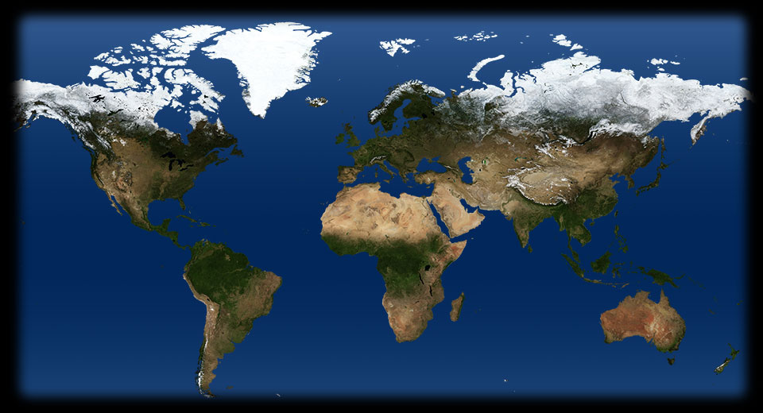

Lezione 19  La seconda guerrra mondiale
La seconda guerrra mondiale

- 155 555
- 135 580
- 270 895
- 215 505
STALINGRADO
Tra l'estate del 1942 e il febbraio del 1943 i tedeschi e i loro alleati contendono ai sovietici il controllo della regione strategica compresa tra il Don e il Volga. In particolare i tedeschi vogliono Stalingrado, la città che porta il nome del dittatore russo. Per lo stesso motivo i russi sono decisi a difenderla fino all'ultimo uomo. E così è. Le strade e le case della città sono teatro di scontri furibondi, ogni metro di terreno passa più volte di mano. Alla fine i tedeschi da assedianti diventano assediati. Un'audace manovra di aggiramento dei carri armati sovietici li chiude in una sacca da cui non usciranno più.DON
Tra il luglio del 1941 e il gennaio del 1943 un corpo di spedizione italiano, l'ARMIR, affianca l'alleato tedesco in Russia. Conta su circa 230 mila uomini, che, dopo i primi successi, vengono schierati sul Don, a difesa di un tratto di fronte lungo circa 270 chilometri. Male equipaggiati e privi di mezzi di trasporto devono fronteggiare un nemico di gran lunga superiore. Alla fine il fronte cede, i militari sono costretti a ritirarsi, a piedi, nella neve, come si vede in questa fotografia di Guido Vettorazzo. Le cifre ufficiali parlano di 84 mila dispersi e 30 mila feriti e congelati. Le perdite maggiori si registrano tra le truppe alpine: erano partiti in 57 mila, torneranno in 11 mila.MIDWAY
Tra il 4 e il 6 giugno la flotta americana e quella giapponese si fronteggiano al largo delle isole Midway. Non è un tradizionale scontro tra navi da combattimento: gli attacchi avvengono con aerei imbarcati sulle portaerei, e quelli americani si dimostrano più efficienti. Dopo aver perso molte navi e moltissimi piloti i giapponesi sono costretti a ritirarsi. Non prenderanno più l'iniziativa. Il loro comandante, il grande ammiraglio Isoroku Yamamoto, lo sapeva. "Posso fare significativi progressi per i primi sei mesi - aveva spiegato all'imperatore - ma non nutro alcuna fiducia per il secondo e terzo anno".EL ALAMEIN
A El Alamein si combattono due grandi battaglie, decisive per le sorti del conflitto in Africa. Nella prima, dal primo al 27 di luglio, le forze del'Asse guidate dal generale tedesco Erwin Rommel vengono fermate dalle difese inglesi. Nella seconda, tra il 23 ottobre e il 3 novembre, gli Alleati, superiori in uomini e mezzi, passano all'offensiva. Sono comandati dal generale Bernard Montgomery, che qui vediamo alla guida di un carro armato. Gli italiani si battono con valore, ma pagano cara la disorganizzazione e l'inferiorità degli armamenti. Un sacrario sulla litorale per Alessandria raccoglie i resti di 5200 soldati italiani e 232 ascari libici.